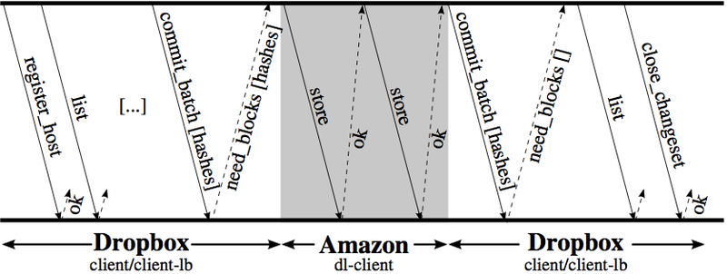

Название лекции
Разработка динамичесих веб приложений
Гладкий Максим Валерьевич / github:MaksHladki
Содержание лекции
Это облачное хранилище, в котором пользователи хранят свои файлы. У нас 500 миллионов пользователей, у нас более 200 тысяч бизнесов, а также огромное количества данных и трафика (более 1.2 млрд новых файлов в день).
Dropbox — файловый хостинг компании Dropbox Inc., включающий персональное облачное хранилище, синхронизацию файлов и программу-клиент. Штаб-квартира компании расположена в Сан-Франциско.
Dropbox позволяет пользователям создать специальную папку на своих компьютерах, которую Dropbox синхронизирует таким образом, что она имеет одинаковое содержимое независимо от того, какое устройство используется для просмотра[2]. Файлы, размещённые в этой папке, также доступны через веб-сайт Dropbox и мобильные приложения. Dropbox работает по модели Freemium, в которой пользователи имеют возможность создать бесплатный аккаунт с заданным количеством свободного пространства, в то время как для увеличения объёма аккаунта необходима платная подписка[3].
Особенности
Dropbox позволяет пользователю размещать файлы на удалённых серверах при помощи клиента или с использованием веб-интерфейса через браузер[5][6]. При установке клиентского программного обеспечения Dropbox на компьютере создаётся синхронизируемая папка. Хотя главный акцент технологии делается на синхронизацию и обмен информацией, Dropbox ведёт историю загрузок, чтобы после удаления файлов с сервера была возможность восстановить данные[7][8]. Также ведётся история изменения файлов, которая доступна на период последних 30 дней[9], помимо этого доступна функция бессрочной истории изменения файлов «Pack-Rat»[10].
История изменения файлов ведётся по принципу diff-кодирования, чтобы сэкономить место, занимаемое файлами. В истории изменения записывается только отличие одной версии файла от другой[11]. Файлы, загруженные через клиент, не имеют ограничения на размер, но файлы, загруженные через веб-интерфейс, ограничены 20 ГБ[12]. Есть также возможность выкладывать файлы для общего доступа через папку «Public», что позволяет использовать сервис в качестве файлообменника. В версиях 0.8.x также появилась возможность предоставления в общий доступ любой папки в «My Dropbox» для последующего доступа через так называемый «shareable link», то есть через веб-интерфейс. Для совместной работы над проектами сервис имеет возможность создания «Shared» папок для общего доступа лиц, имеющих разные учётные записи на сервисе. Доступна автоматическая синхронизация файлов и папок и хранение версий с возможностью отката[13].
В отличие от ряда аналогов, Dropbox не использует шифрование данных на стороне клиента, что, в частности, сделало возможным инцидент 19 июня 2011 года, когда из-за ошибки в обновлённом программном обеспечении сервера в течение четырёх часов был возможен вход в любой аккаунт с использованием любого пароля[14][15]
Сервис предлагает бесплатно 2 ГБ для хранения данных, которые можно увеличить бесплатно до 16 ГБ, приглашая новых пользователей или же получить несколько гигабайт после выполнения заданий (установка приложения Dropbox на мобильный телефон и т. д.). А также можно купить 1 ТБ.
- Хранить файлы в безопасном месте
- Делиться файлами с другими людьми
- Постоянно иметь к ним доступ вне зависимости от своего месторасположения
Язык разработки
Dropbox клиент разработан в основном на языке Python с использованием сторонних библиотек, таких как librsync. Клиент поддерживает все основные ОС: Windows, Mac, Linux. Использование Python однозначно говорит о том, что клиент разрабатывался с учетом облегченного портирования на различные платформы.
Взрыной рост
- 1 миллион файлов сохраняются в Dropbox каждые 15 минут (по презентации это больше, чем твитов в Twitter за тот же период времени, но это несколько преувеличено)
- Одно из самых скачиваемых приложений, уступает лишь Skype
- Важная часть жизни многих пользователей: "не могу жить без этого"
- рост обеспечен "сарафанным радио", практически без рекламы
Архитектура
- Первый кусок — это сервер метаданных, в нем хранится информация о файлах, связи между файлами, информация о пользователях, какая-то бизнес логика, и все это связано с базой данных.
- Второй большой кусок — это блочный storage в котором хранятся данные пользователей. Изначально, в 2011 году, все данные хранились в Amazon S3. В 2015 году, когда нам удалось перекачать все эксабайты к себе, мы рассказали о том, что написали свой облачный storage. ( Magic Pocket)
Мы назвали его Magic Pocket. Он написан на Go, частично на Rust и достаточно много на Python. Архитектура Magic Pocket, он кросс-зоный, есть несколько зон. В Америке это три зоны, они объединены в Pocket. Есть Pocket в Европе, с американским он не пересекается, потому что жители Европы не хотят, чтобы их данные были в Америке. Зоны между собой реплицируют данные. Внутри зоны есть ячейки. Есть Master, который управляет этими ячейками. Есть репликации между зонами. В каждой ячейке есть Volume Manager, который следит за серверами, на которых хранятся эти данные, там достаточно большие сервера.
На каждом из серверов это все объединено в bucket, bucket – это 1 GB. Мы оперируем bucket’ами, когда перекидываем данные куда-то, когда что-то удаляем, очищаем, дефрагментируем, потому что сами блоки данных, которые мы сохраняем от пользователя, — это 4 MB, и оперировать ими очень сложно. Все компоненты Magic Pocket хорошо описаны в нашем техническом блоге, про них я не буду рассказывать.
Как же мы на самом деле улучшаем доступность и сохранность данных?
Категории
- Изоляция;
- Защита;
- Контроль;
- Автоматизация.
Виды изоляции
- Физическая;
- Логическая;
- Эксплуатационная.
Физическая изоляция
На масштабах Dropbox или компании вроде Dropbox нам очень важно общаться с дата центром, мы должны знать, как наши сервисы располагаются внутри дата центра, как к ним подводится энергия, какая сетевая доступность у этих сервисов. Мы не хотим в одной стойке держать сервисы баз данных, которые нам нужно постоянно бэкапить. Допустим, каждый бэкап у нас 400 Мбит/с, и у нас просто канала не хватит. Чем глубже вы уходите в этот стэк, тем дороже ваше решение, и тем оно становится сложнее. Насколько низко спускаться — это ваше решение, но, само собой, вы не должны класть все реплики ваших баз данных в одну стойку. Потому что энергия отключится и у вас баз данных нет больше.
Можно посмотреть на все это в другом измерении, с точки зрения производителя оборудования. Очень важно пользоваться разными производителями оборудования, разными прошивками, разными драйверами. Почему? Хоть производители оборудования и говорят, что их решения надежны, на самом деле они врут и это не так. Хорошо хоть не взрываются.
Исходя из всего этого, важно критические данные класть не только у себя где-то в бэкапах на своей инфраструктуре, но и во внешней инфраструктуре. Например, если вы у облака Google, то важные данные кладете в Amazon, и наоборот. Потому что если ваша инфраструктура погаснет, то бэкап будет взять неоткуда.
Логическая изоляция
Про нее практически все всё знают. Основные проблемы: если один сервис начинает создавать какие-то проблемы, то другие сервисы тоже начинают испытывать проблемы. Если баг был в коде у одного сервиса, то этот баг начинает распространяться на другие сервисы. У вас начинают поступать неправильные данные. Как с этим справиться?
Слабая связанность! Но это очень редко работает. Есть такие системы, которые не слабо связаны. Это базы данных, ZooKeeper. Если у вас большая нагрузка пошла на ZooKeeper, у вас кластер кворум упал, то он весь упал. С базами данными примерно то же самое. Если большая нагрузка на master, то скорее всего весь кластер упадет.
Это высокоуровневая диаграмма нашей архитектуры. У нас есть две зоны, и между ними мы сделали очень простой интерфейс. Это практически put и get, это именно для storage. Это было очень сложно для нас, потому что мы хотели сделать все сложнее. Но это очень важно, потому что внутри зон все очень сложно, там и ZooKeeper, и базы данных, кворумы. И это все периодически падает, прям все сразу. И чтобы это не захватило остальные зоны, между ними есть этот простой интерфейс. Когда одна зона падает, то вторая скорее всего будет работать.
Эксплуатационная изоляция
Как бы вы хорошо ни раскидали ваш код по разным серверам, как бы хорошо его логически ни изолировали, всегда найдется человек, который сделает что-то не так. Например, в «Одноклассниках» была проблема: человек раскатал на все сервера Bash shell, в котором что-то не работало, и все сервера отключились. Такие проблемы тоже бывают.
Еще шутят, что если бы все программисты и системные администраторы ушли куда-нибудь отдыхать, то система бы работала гораздо стабильнее, чем когда они работают. И это действительно так. Во время фризов многие компании имеют такую практику делать заморозку перед новогодними каникулами, система работает гораздо стабильнее.
Контроль доступа. Релиз процесс: все это активно тестируете, затем тестируете на staging, который использует, например, ваша компания. Дальше мы выкладываем изменения в одну зону. Как только мы удостоверились, что все нормально, мы раскладываем на остальные две зоны. Если что-то не нормально, то мы с них реплицируем данные. Это все касается storage. Продуктовые сервисы мы постоянно обновляем, раз в день.
Защита
Это валидация операций. Это возможность восстановить эти данные. Это тестирование. Что такое валидация операций?
Валидация операций
Самый большой риск для системы — это оператор.
Мы поменяли синтаксис команды (gsh), чтобы не было больше таких проблем. Мы запретили выполнять деструктивные операции на живых сервисах (DB, memcache, storage). То есть нам нельзя ни к коем случае перезагрузить базу данных, не остановив её и не убрав её из production, так же с memcache. Все такие операции мы стараемся автоматизировать.
Второй пример
Это SQLAlchemy. Это библиотека для Python для работы с базами данных. И в ней для update, insert, delete есть такой аргумент, который называется whereclause. В нем вы можете указать что вы хотите удалить, что вы хотите апдейтить. Но если вы туда передадите не whereclause, а where, то sqlalchemy ничего не скажет, он просто удалит все без where, это очень большая проблема. У нас есть несколько сервисов, например, ProxySQL. Это прокси для MySQL, который позволяет запретить многие деструктивные операции (DROP TABLE, ALTER, updates без where и т.д.). Так же в этом ProxySQL можно сделать throttling и для тех запросов, которые мы не знаем, ограничить их количество, чтобы умный запрос не положил нам master случайно.
Восстановление
Восстановление. Очень важно не только создавать бэкапы, но и проверять, что эти бэкапы восстановятся. Facebook недавно выложил статью, где они рассказывают, как они постоянно делают бэкапы и постоянно восстанавливаются из этих бэкапов. У нас по сути все тоже самое. Вот пример из нашего Orchestrator, за какой-то короткий отрезок времени:
Видно, что у нас постоянно делаются клоны баз данных, потому что у нас на одном сервере до 32 баз данных расположено, мы постоянно их перемещаем. Поэтому у нас постоянно происходит клонирование. Постоянно promotion идут в master и на slave и т.д. Так же огромное количество бэкапов. Мы бэкапимся к себе, также в Amazon S3. Но у нас также постоянно происходит recovery. Если мы не проверим, что каждая база данных, которую мы забэкапили, может восстановиться, то по сути у нас этого бэкапа нет.
Тестирование
Все знают, что полезно и юнит-тестирование, и интеграционное тестирование. С точки зрения доступности, тестирование — это MTTR, время для восстановления, оно по сути равно 0. Потому что вы этот баг нашли не в production, а до production и пофиксили его. Availability не прогнулось. Это тоже очень важно.
Контроль
то-то всегда напортачит: либо программисты, либо операторы что-то сделают не так. Это не проблема. Нужно иметь возможность находить и исправлять это всё. У нас для storage существует огромное количество верификаторов.
Их на самом деле 8, а не 5, как здесь. У нас коды верификаторов больше кодов самого storage. У нас 25% внутреннего трафика — это верификации. На самом низком уровне работают disk scrubber’ы, которые просто читают блоки с жесткого диска и проверяют контрольные суммы. Почему мы это делаем? Потому что жесткие диски врут, S.M.A.R.T. врут. Производителям невыгодно, чтобы S.M.A.R.T находил ошибки, потому что им приходится возвращать эти жесткие диски. Поэтому это нужно всегда проверять. И как только мы видим проблему, мы пытаемся восстановить эти данные.
У нас есть trash inspector. Когда мы что-то удаляем, либо перемещаем, либо что-то деструтивное делаем с данными, мы сначала кладём эти данные в некую корзину и потом проверяем эти данные, действительно ли мы хотели их удалить. Хранятся они там две недели, например. У нас capacity на это двухнедельное время удаленных данных, это очень важно, поэтому мы тратим на это деньги. Мы так же постоянно часть трафика, который приходит в storage, сохраняем эти операции в Kafka. Потом эти операции повторяем уже на storage. Мы обращаемся к storage как к blackbox, чтобы посмотреть, действительно ли там есть данные трафика, который к нам пришел, и те, которые записались, мы их можем забрать.
Автоматизация
Самая важная вещь. Когда у вас количество серверов растет линейно или экспоненциально, то количество людей не рождается линейно. Они рождаются, учатся, но с какой-то периодичностью. И вы не можете увеличивать количество людей равносильно количеству ваших серверов. Поэтому вам нужна автоматизация, которая будет выполнять работу за этих людей.
В автоматизации очень важно собирать метрики с вашей инфраструктуры. Я практически ничего не говорил про метрики в своем докладе, потому что метрики — это ядро вашего сервиса и про него упоминать не надо, потому что это самая важная часть вашего сервиса. Если у вас нет метрик, вы не знаете, работает ваш сервис или нет. Поэтому очень важно собирать метрики быстро. Если, например, у вас метрики собираются раз в минуту, а проблема у вас в минуте, то вы про нее не узнаете. Также очень важно быстро реагировать. Если реагирует человек, например, у нас минута прошла, когда что-то случилось, что-то закладывается на то, что баг был в метрике, вам приходит alert. У нас policy в течение 5 минут. Вы должны начать что-то делать, реагировать на alert в это время. Вы начинаете что-то делать, начинаете разбираться, по сути у вас проблема решается в среднем минут 10-15, в зависимости от проблемы. Автоматизация позволяет вам ускорить, но не решить, в том плане, что она дает информацию об этой проблеме до того, как вы займетесь решением данной проблемы.
У нас есть такой инструмент Naoru — параноидальная автоматизация.
Структура параноидаольной автоматизации
Она состоит из неких алертов, которые приходят. Это может быть простой пайтоновский скрипт, который коннектится к серверу и проверяет, что он доступен. Это может приходить из Nagios или Zabbix, неважно что вы используете. Главное, чтобы это приходило быстро. Дальше мы должны понять, что с этим делать, мы должны продиагностировать. Например, если сервер недоступен, мы должны попробовать подключится по SSH, подключится по IPMI, посмотреть, если нет ответа, он завис или еще что-то, вы прописываете какое-то лечение.
Дальше, когда вы пишите автоматизацию, все должно пройти через оператора. У нас есть policy, что мы любую автоматизацию, примерно 3-6 месяцев она решается через оператора.
Мы собрали всю информацию о проблеме, и оператору вываливается эта информация, такой-то сервер недоступен по такой-то причине, и указывается, что нужно сделать, и спрашивается подтверждение у оператора. Оператор обладает очень важными знаниями. Он знает, что сейчас какая-то проблема с сервисом. Он, например, знает, что этот сервер нельзя перезагружать, потому что на нем еще что-то запущено. Поэтому его нельзя просто перезапустить. Поэтому каждый раз, когда оператор сталкивается с какой-то проблемой, он вносит какие-то улучшения в этот скрипт автоматизации, и с каждым разом он становится все лучше.
система Wheelhouse
По сути у нас есть кластер базы данных, у которой есть один master. A и есть два slave. Нам нужно заменить этот master, например, мы хотим обновить ядро. Чтобы его заменить нам нужно запромоутить slave, депромоутить тот master, удалить его. У нас есть требование в Dropbox, у нас в кластере всегда должно быть два slave для такой конфигурации. У нас есть некое состояние этого кластера. HostA находится в production, он master, он еще не освобожден, количество slave у нас два, но нам нужно три для этой операции.
Из replace_loop (синяя стрелочка) мы видим, что наш сервер находится в production, и нам не хватает slave’ов, и мы переходим в состояние выделить еще slave. Мы приходим в это состояние, мы инициируем работу создать новый клон с master’a новый slave. Это запускается где-то в Orchestrator, мы ждем. Если работа завершена, и все хорошо, то мы переходим к следующему шагу. Если был fail, то переходим в состояние failure. Дальше мы добавляем в этот хост новый slave в production, тоже инициируем в Orchestrator эту работу, ждем и возвращаемся в replace_loop.

На самом деле это depromote. Потому что нам нужно master сделать slave’ом, а какой-то slave master’ом. Тут все тоже самое. Добавляется работа в Orchestrator, проверятся условие и так далее, остальные шаги примерно такие же. Мы после этого удаляем master с production, убираем с него трафик. Удаляем master в инсталлятор, чтобы люди, которые занимаются этим сервером, могли что-то обновить на нем.
Этот блок очень маленький, но он участвует в более сложных блоках. Например, если нам нужно перенести целую стойку в другую стойку, потому что драйвера на свитчах меняются, и нам нужно просто всю стойку отключить чтобы перезагрузить свитч. У нас много описано таких диаграмм-состояний для разных сервисов, как их гасить, как их поднимать. Это все работает. Даже математически можно доказать, что у вас система всегда будет находиться в рабочем состоянии. Почему это сделано через STM, а не в режиме процедур? Потому что если это долгий процесс, например, клонирование может занимать час или около того, то у вас может случиться что-то еще, и состояние вашей системы изменится. В случае с машиной состояний вы всегда знаете, какое состояние и как на него реагиров
Блоки
Основной элемент системы — это блок (chunk) размером до 4 Mb. В случае, если файл большего размера, он разбивается на несколько блоков, и каждый блок воспринимается системой независимо от других. Для каждого блока вычисляется SHA256 хеш, и эта информация является частью метаинформации о файле. Dropbox уменьшает объем передаваемых данных за счет передачи только разницы между измененными блоками файла. Кроме того, локально он содержит всю метаинформацию по файлам, которую синхронизирует с сервером и передает только изменения с прошлой версии (incremental updates).
Dropbox использует два типа серверов: управляющий (control) и сервер данных (data storage). Сервера управления находятся под контролем Dropbox, сервера данных — это сервера Амазона (Amazon S3, EC2). Для коммуникациями с серверами во всех случаях используется HTTPS.
Доменные имена
| Поддомен | Хостинг | Описание |
|---|---|---|
| client-lb/clientX | Dropbox | Meta data |
| notifyX | Dropbox | Notifications |
| api | Dropbox | API control |
| www | Dropbox | Web servers |
| d | Dropbox | Event logs |
Продолжение
| Поддомен | Хостинг | Описание |
|---|---|---|
| dl | Amazon | Direct links |
| dl-clientX | Amazon | Client storage |
| dl-debugX | Amazon | Back traces |
| dl-web | Amazon | Web storage |
| api-content | Amazon | API storage |
протокол, используемый Dropbox для загрузки локально измененных блоков на свои сервера
Схема
Описание
- После регистрации клиента на управляющих серверах clientX.dropbox.com, команда list получает изменения в метаданных, которые показывают разницу между локальной копией и тем, что находится на сервере.
- Как только происходит локальное изменение файлов, Dropbox вызывает команду commit_batch (client-lb.dropbox.com) и посылает измененные метаданные на сервер.
- После этого сервер отвечает, какие блоки ему необходимы, используя команду need_blocks, и клиент отсылает эти блоки на Amazon (dl-clientX.dropbox.com).
- Сохранение каждого блока подтверждается командой ОК.
- После этого локальный клиент еще раз раз посылает команду commit_batch на сервер и получает подтверждение, что все блоки получены. Транзакции сохранения данных могут выполняться параллельно.
Протокол управления
Dropbox использует следующие группы управляющих серверов:
- Уведомления (notifications). Dropbox держит постоянное открытое TCP соеденинение с серверами уведомлений (notifyX.dropbox.com). Это необходимо для получения информации об изменении файлов, которое могло произойти на других клиентах. По сравнению с другим трафиком, эта информация не шифруется. Используется задержка HTTP ответа для быстрого уведомления клиентов (push mechanism). Клиент посылает запрос, и сервер задерживает ответ примерно на 60 секунд. По истечении 60 секунд, клиент немедленно посылает следующий запрос на сервер. Если ответ сформирован раньше, то сервер отвечает немедленно.
- Управление метаданными (meta-data administration) Сервера управления метаданными отвечают не только за информирование об изменениях в блоках и файлах, но также и за авторизацию (authentication) клиента. Для этих серверов используются следующие доменные имена: client-lb.dropbox.com, clientX.dropbox.com. Кроме этого, сервера управления могут контролировать поведение клиента. В момент эксперимента было замечено, что сервера могут указать клиенту максимальное количество блоков, которое он может посылать на сервер. Это используется для управления трафиком, который генерирует клиент.
- Системные сообщения (system logs) сервера предоставляются Амазоном и имеют название dl-debug.dropbox.com; остальные сообщения идут непосредственно на Dropbox d.dropbox.com.
Dropbox Infinite
Ровно месяц назад Dropbox анонсировал Dropbox Infinite — «революционно новый способ доступа к вашим файлам», как писала компания в корпоративном блоге. В демонстрационном видео показали, что десктопный клиент Dropbox предоставляет прямой доступ к облачному хранилищу файлов на уровне файловой системы, без необходимости запускать браузер. Локальный диск «увеличивается» на размер облачного хранилища, файлы доступны напрямую. Облачное хранилище может быть больше по размеру, чем локальный диск. Сейчас компания раскрыла технические подробности, как работает эта функция.
«Традиционно Dropbox работал полностью в пространстве пользователя, как любая другая программа на вашей машине, — пишет разработчик компании Дэмьен Девиль (Damien DeVille). — С Dropbox Infinite мы углубляемся ещё глубже: в пространство ядра. С этой технологией клиент Dropbox меняет роль от пассивного наблюдателя, который смотрит, что происходит на локальном диске, на активную роль в вашей файловой системе. Мы почти два года работали над тем, чтобы соединиться кусочки паззла вместе, чтобы они работали прозрачно».
Разработчик объясняет, что обычная схема FUSE не устраивает их с точки зрения производительности: каждая файловая операция обычно требует лишнего переключения контекста между пространством ядра и пространством пользователя, см. схему FUSE).
Схема FUSE
Производительность — не единственная причина. Dropbox считает, что замена стандартных библиотек FUSE на собственное расширение ядра устраняет излишнюю сложность и, следовательно, повышает безопасность системы.
Ещё одна полезная вещь: в расширении ядра работает проверка прав доступа через Kernel Authorization (Copy Hooks в Windows), чтобы детектировать и запрещать определённые операции в папке Dropbox.
Если приложение работает в пространстве ядра, оно может позволить себе гораздо больше, чем обычная программа в пространстве пользователя. С точки зрения безопасности это довольно рискованно. «Если Dropbox в ядре, то может получить доступ к чему угодно, — говорит Сэм Боун (Sam Bowne), который ведёт курсы этического хакинга в колледже Сан-Франциско. — Если в клиенте Dropbox есть баг, его можно использовать для захвата всей системы».
Фейлы
2017
На прошлой неделе на форуме Dropbox развернулось бурное обсуждение, в ходе которого многие пользователи сообщили, что они обнаружили в своих папках файлы, которые были удалены несколько лет назад. Некоторые утверждают, что вновь увидели файлы, с момента удаления которых прошло 7 лет.
Сразу же было высказано предположение о том, что серверы и учетные записи Dropbox были взломаны. Однако представители сервиса успокоили пользователей, сообщив, что причина заключается в некоторой ошибке, из-за которой удаленные файлы действительно хранились на серверах Dropbox. В Dropbox не сообщили, какой объем дополнительного пространства был занят из-за этой ошибки, отметив лишь, что она полностью устранена.
2012
Спустя 4 года после взлома, руководство Dropbox признало факт утечки паролей. В руках хакеров оказались 68 млн паролей – почти 2/3 клиентов сервиса.
В последнее время Dropbox преследуют неприятности. Неделю назад заголовки пестрили сообщениями и опровержениями о произошедшей в облачном сервисе утечке пользовательских паролей невиданного масштаба. В то время как данный взлом без сомнения представляет угрозу для пользователей сервиса Dropbox, совсем новым его назвать нельзя. Своими корнями он уходит в 2012 год, когда сервис сообщил о крупной утечке адресов электронной почты своих пользователей. Интересно, что в сообщениях об инциденте трехлетней давности не было ни одного упоминания об похищенных паролях. Компания утверждала, что украдены были только почтовые адреса. Только теперь становится ясно, что прошлый инцидент не был исчерпан в 2012 году. Сразу после сообщения об инциденте с утечкой более 68 млн паролей, в официальном блоге компании Dropbox было опубликовано сообщение с ценными рекомендациями для пользователей. Ниже приведены некоторые из тех советов и рекомендаций, которые Dropbox дает своим пользователям:
Спасибо за внимание